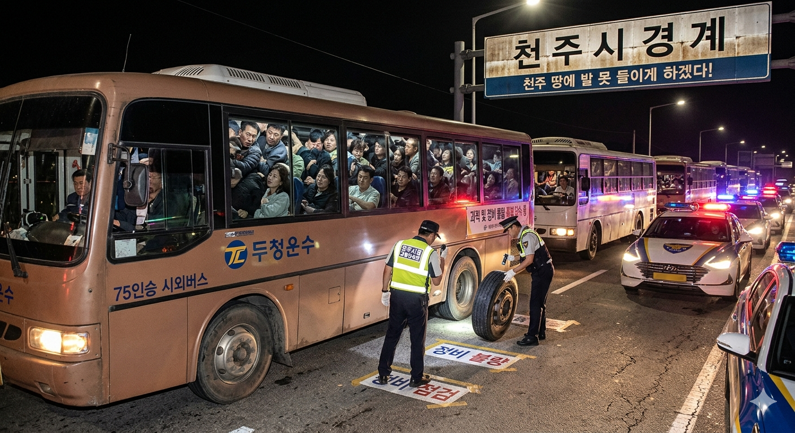

"거지 동네? 주둥이 조심해라"... 강수성 천주시장, 효빈시 '빈효선 분담금 거부'에 전면전 선포
입력 2007.08.15. 11:20 | 수정 2007.08.15. 12:45
강수성 천주시장, 약산시장과 연대해 효빈시 상대 '분담금 이행 청구 소송' 접수
윤대환 효빈시장 "천주는 효빈 덕에 먹고사는 거지 동네" 망언 파문 확산
천주시, 두청운수 버스 '과적·정비 불량 특별 단속' 지시... 사실상 보복 행정 돌입
시민사회 "7,000원 폭리 두청운수 불매하자" 탑승 거부 운동 들불처럼 번져
[효빈일보 = 윤기자] 윤대환 효빈시장의 광역철도 분담금 집행 거부로 촉발된 이른바 '빈효선 사태'가 지자체 간의 전면전으로 치닫고 있다. 인접 지자체인 천주시와 약산시가 효빈시를 상대로 공동 행정 소송을 제기하며 윤대환 시장을 향한 전방위적 압박에 돌입했다.
강수성 천주시장은 15일 오전 천주시청에서 긴급 기자회견을 열고 "이미 3개 시가 합의를 마친 국책 사업 분담금을 일방적으로 파기한 윤대환 시장의 독단적 행태를 더 이상 좌시할 수 없다"며 "오늘부로 약산시장과 동맹을 맺고 효빈시를 상대로 '광역철도 분담금 이행 청구 소송'을 법원에 접수했다"고 밝혔다.
갈등의 도화선은 지난달 강 시장이 효빈시청을 항의 방문했을 당시 윤 시장이 내뱉은 발언이었다. 복수의 관계자에 따르면 윤 시장은 강 시장을 면전에 두고 **"솔직히 천주나 약산 같은 거지 같은 베드타운들이 우리 효빈 덕에 먹고사는 거 아니냐. 꼬우면 니들이 돈 내서 전철을 짓든가 해라"**라며 원색적인 막말을 쏟아낸 것으로 알려졌다.
이에 평소 온건하고 꼼꼼한 행정가로 알려진 강 시장은 책상을 내리치며 **"우리 시민들이 7,000원이라는 말도 안 되는 요금을 내며 짐짝처럼 버스에 끼여 가는 고통을 기생이라고 표현했느냐. 시장님, 그 주둥이 조심하십시오. 제가 천주시장으로 있는 한 두청운수 버스 단 한 대도 천주 땅에 바퀴 못 들이게 만들겠습니다"**라고 응수하며 협상 결렬을 선언했다.

강 시장의 경고는 즉각 현실화되었다. 천주시는 지난주부터 시 경계로 진입하는 모든 두청운수 소속 시외버스를 대상으로 경찰과 시청 단속반을 총동원해 **'과적(75인승 탑승) 및 정비 불량 특별 단속'**을 매일같이 실시하고 있다. 단속 첫 주에만 수백 건의 과태료 폭탄이 두청운수 측에 부과된 것으로 파악되었다.
이번 사태의 이면에는 윤 시장이 자신의 일가 기업인 '두청운수'의 시외버스 독점 체제와 7,000원이라는 살인적인 요금 수익을 지키기 위해 고의로 광역전철망 연결을 막고 있다는 의혹이 짙게 깔려 있다.
천주시와 약산시 시민들 역시 분노를 금치 못하고 있다. 지역 커뮤니티와 시민단체를 중심으로 "우리 피를 빨아먹는 두창(痘瘡)운수 불매하자"는 탑승 거부 운동이 들불처럼 번지고 있다. 일부 시민들은 효빈시 경계까지 자가용 카풀을 조직하며 윤 시장과 두청운수를 향한 실력 행사에 나서고 있다.
지방자치제도 출범 이후 유례를 찾아보기 힘든 이 지자체 간의 노골적인 무역 분쟁(?) 양상은 결국 법정에서 판가름 날 전망이다. 그러나 사태 장기화에 따른 시민들의 교통 불편과 윤대환 시장을 향한 범시민적 분노는 당분간 수그러들지 않을 것으로 보인다.